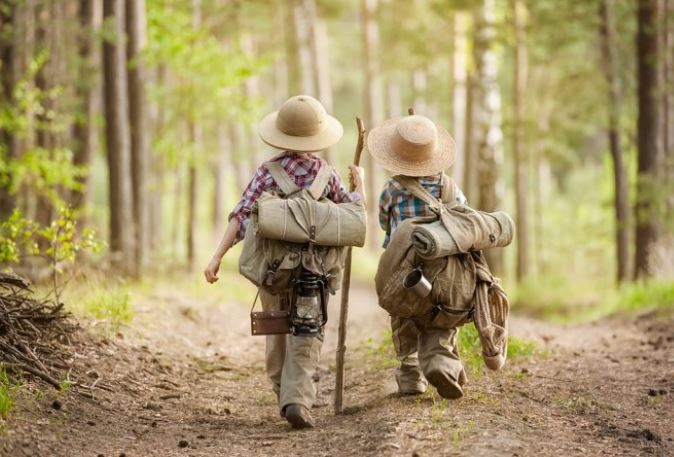

Mayor confianza en sí mismo: el viajar nos obliga a ser más sociables, por el instinto de supervivencia a algo desconocido, nos hace que la relación con los demás sea más fluida y natural. Viajar ayuda a hacer actividades que no hubiésemos hecho en otro lugar. ¡Ser tímido quedará en la historia!

La mejor manera de acumular experiencias es viajando, y puede hacer que
nuestra perspectiva sobre infinidad de cosas cambie.
Son numerosas las
investigaciones que coinciden en enumerar ciertos efectos positivos de
viajar:
Viajar adquiere especial importancia en el caso de niños y adolescentes. Favorece su desarrollo como personas y la gestión de sus comportamientos sociales; fomenta la colaboración y el trabajo en equipo, el cuidado del entorno, y les proporciona madurez en sus capacidades resolutivas. También les ayuda a experimentar una mayor independencia, a elevar sus niveles de autoestima y a desarrollar habilidades de destreza y agilidad mental. Estos beneficios, junto a muchos otros, no son exclusivos de los viajes largos; una escapada corta también puede aportar experiencias muy positivas. Sólo se necesita estar motivado.